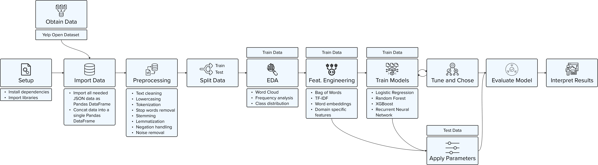

You have likely figured it out — this site is in the making. Please check back regularly to watch as I build it bit by bit.
Introduction
Understanding customer sentiment is essential for businesses focused on improving their services and remaining competitive. Reviews offer valuable insights into customer experiences. By systematically analyzing and quantifying this sentiment data, businesses can identify areas for improvement that enhance customer satisfaction. In industries where customer feedback holds significant influence, such as dining, hospitality, and retail, sentiment analysis becomes a strategic tool for targeted improvements to stay competitive by increasing customer satisfaction narrowing the gap between the business' Current Value and Unrealized Value.
The scope of this project includes extracting, processing, and analyzing customer reviews from Yelp's Open Dataset. The analysis focuses on sentiment classification into positive, neutral, or negative reviews and aggregating these sentiments to gain insights at the store level. Additionally, I am exploring predictive analyses to identify potential areas of improvements based on the sentiment profile to enhance customer engagement and sales performance.
Scenario (fictitious)
Lorena Castillo is the new Regional Manager for First Watch Restaurants in Florida. After taking over the Florida branches from her predecessor, she discovered that the restaurant health documentation was inadequate and customer and employee satisfaction analyses were outdated. To develop a meaningful strategy, she first needed a clear overview of the current status of the restaurants under her management. While reviewing numerous online reviews, she quickly became overwhelmed by the sheer volume and lack of structure. Lorena decided to outsource the analysis to a reliable service provider. Given the straightforward nature of the project and the need for quick results, she reached out to five consulting firms.
{kind=link}
As a result of my clear, transparent, and problem-focused proposal, Lorena awarded the contract to my firm.
Data | provided by 
In this project, I am using customer review data provided by Yelp. Yelp offers two methods of data access: Yelp Open Dataset and Yelp Fusion.
Yelp Fusion API provides real-time data but imposes several restrictions. Customer reviews are limited in both the number of requests that can be made per day and the number of characters in each review. Additionally, data retrieved through API can only be cached for 24 hours, and the process of retrieving data can be time-consuming. These limitations can complicate data analysis, especially when it is important to use the same dataset for maintaining reproducibility throughout the project.
For these reasons, I have chosen to use Yelp’s Open Dataset, which is publicly and freely accessible through Yelp Open Data Download site. Yelp generously provides the Open Dataset for non-commercial personal, educational, and academic purposes and rightfully prohibits the uncontrolled redistribution of their data. To comply with Yelp's Terms of Service, I will not save the Open Dataset or derivates of it in my repository. Instead, please download the Open Dataset directly from Yelp's Open Dataset website to run the script.
Data Analysis
Near a great forest, there lived a poor woodcutter and his wife and his two children; the boy's name was Hansel, and the girl's name was Gretel. He had little to bite and to break, and once, when great scarcity fell on the land, he could no longer procure even daily bread. Now when he thought over this by night in his bed, and tossed about in his anxiety, he groaned and said to his wife: "What is to become of us? How are we to feed our poor children, when we no longer have anything even for ourselves?"
Results
"I'll tell you what, husband," answered the woman, "early tomorrow morning we will take the children out into the forest to where it is the thickest; there we will light a fire for them,
and give each of them one more piece of bread, and then we will go to our work and leave them alone. They will not find the way home again, and we shall be rid of them."
"No, wife," said the man, "I will not do that; how can I bear to leave my children alone in the forest?—the wild animals would soon come and tear them to pieces."
"Oh, you fool!" said she, "then we must all four die of hunger; you may as well plane the planks for our coffins," and she left him no peace until he consented.
"But I feel very sorry for the poor children, all the same," said the man.